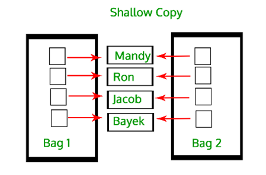
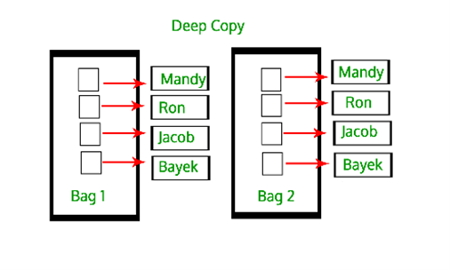

Code
# egz. of inheritance and use of super() function
class Class():
def __init__(self, x):
print(x)
class SubClass(Class):
def __init__(self, x, y):
self.y = y
super().__init__(x) Python is an interpreted language. Developer does not assign data types to variables at the time of coding, i.e. it automatically gets assigned during execution. Everything in Python is considered as an object (it has an ID, a type, and a value), even functions.
All Python objects and data structures are located in a private heap and the programmer does not have access to it. The Python interpreter takes care of this instead. The allocation of heap space for objects is done by Python’s memory manager. Python also has an inbuilt garbage collector, which recycles all the unused memory and so it can be made available to the heap space.
Modules vs packages vs libraries. A Python module can be simple Python file, i.e. a combination of numerous functions and global variables. A Python package is a collection of different Python modules (like a directory of modules). Python libraries are a collection of Python packages.
Functions in Python are „first class citizens“. This means that they support operations such as being passed as an argument, returned from a function, modified and assigned to a variable. For arguments, we use * args when we aren’t sure how many arguments are going to be passed, or if we want to pass a stored list or tuple of arguments to a function. Also, ** kwargs is used when we don’t know how many keyword arguments will be passed to a function, or it can be used to pass the values of a dictionary as keyword arguments. The identifiers are conventional, you could also use * bob and ** billy. A function produces a „side effect“ if it does anything other than take a value in and return another value/s. For egz., it could be writing to a file, modifying some global variable.. Sometimes you need to have side effects in a program and in these cases you should centralize and indicate where you are incorporating side effect with global keyword near the targeted variable.
When writing a function, it is recommended to put description in “““ “““, so when you later type: “?“ you get that same description of a function.
For cleaner code, function needs to do only what is described in its name.
locals() and globals() functions write out all local and global variables inside the function they are called.
Namespace is a collection of currently defined symbolic names along with information about the object that each name references. An assignment statement creates a symbolic name that you can use to reference an object. The statement x=‘foo’, creates a symbolic name x that refers to the string object ‘foo’. It is a naming system used to make sure that names are unique to avoid naming conflicts. There are four types of namespaces with differing lifetimes: built-in, global, enclosing, local.
Little more on the local and enclosing namespaces. The interpreter creates a new namespace whenever a function executes. That namespace is local to the function and remains in existence until the function terminates. When there is function defined inside other function, outer function is called enclosing function, and inner is called enclosed function. So, the namespace created for enclosing function is called enclosing namespace.
Built-in types: integers, floating-point, complex numbers, strings, boolean, built-in functions
A literal represents a fixed value for primitive data types. There are 5 types of literals in Python: string, numeric, boolean, literal collections (list compreh., tuple, dict, set, None).
Iterable, ordered, mutable and hashable (and their opposites) are characteristics for describing Python objects or data types.
List, tuples, dicts and sets are all iterable objects. They are iterable containers which you can get an iterator from. All these objects have iter() method which is used to get an iterator.
Ordered vs unordered: in unordered types you don’t have direct access to elements (sets, frozensets, ..)
Frozen set is immutable type of set. Set is a mutable data type since we can modify it by adding or removing items from it.
Imutable and mutable: id and type of an object never changes, but value can either change or not. Mutables are: lists, arrays, sets and dictionaries. Immutables are: numeric data types (integers, and other built-in numeric data such as booleans, floats, complex numbers, fractions and decimals), strings, bytes, frozen sets and tuples.
Hashable is a feature of Python objects that tells if the object has a hash value or not. Hash value is a numeric value of fixed length that uniquely identifies data. If the object has a hash value then it can be used as a key for dictionary or as an element in a set. An object is hashable if it has a hash value that does not change during its entire lifetime. Almost all immutable objects are hashable, i.e. all built-in types has a hash method. Unhashable are: dict, list and set.
Some differences betwen:
Shallow vs deep copy. In Python, assignment statements do not copy objects, they create bindings between a target and an object. When we use the = operator, it only cretes a new variable that shares the reference of the original object. So, if you edit the new list, changes will be reflected on the original list.
In order to create „real copies“ or „clones“ of these objects, we can use the copy module. A shallow copy creates a new compound object (object that contain other objects, like lists or class instances) and elements in the new object are referenced to the original elements. Changes made in any member of the class will also affect the original copy of it. But, since it creates a new object, changes like adding or removing items won’t affect the original list, i.e. new list has its own pointer, but its elements don’t. In the case of deep copy, a copy of the object is copied into another object. It means that any changes made to a copy of the object do not reflect in the original object. Copy() returns a shallow copy of the list (list[:] also works), and deepcopy() returns the deep copy.
 
Lambda=annonymous function. It is similar to the inline function in c programming. It returns a function object and can also be used in the place of a variable.
Ternary operator is one-line version of the if-else statement to test a condition
pass statement is used as a placeholder for future code.
assert statement allows you to test if certain assumptions remain true while you are developing your code. Assertions are a convenient tool for documenting, debugging and testing code during development. With assertions, you can set checks to make sure that invariants within your code stay invariant. By doing so, you can check assumptions like preconditions and postconditions.
Pickle module accepts any Python object and converts it into a string representation and dumps it into a file by using dump function. This process is called pickling. While the process of retrieving original Python objects from the stored string representation is called unpickling.
Python uses float because with binary representation we can’t represent decimal numbers. Every number is actually some approximation of some other number, and difference between representation and real value is called round-off error.
4 basic building elements of OOP:
# egz. of inheritance and use of super() function
class Class():
def __init__(self, x):
print(x)
class SubClass(Class):
def __init__(self, x, y):
self.y = y
super().__init__(x) Other notes
from typing import NamedTuple
class Transaction(NamedTuple):
sender: str
receiver: str
date: strdef make_pretty(func):
def inner():
print("I got decorated")
func()
return inner
@make_pretty
def ordinary():
print("I am ordinary")
ordinary() def my_generator(n):
value = 0
while value < n:
yield value
value += 1Concise way for writing a generator is generator expression that looks like a list comprehension.